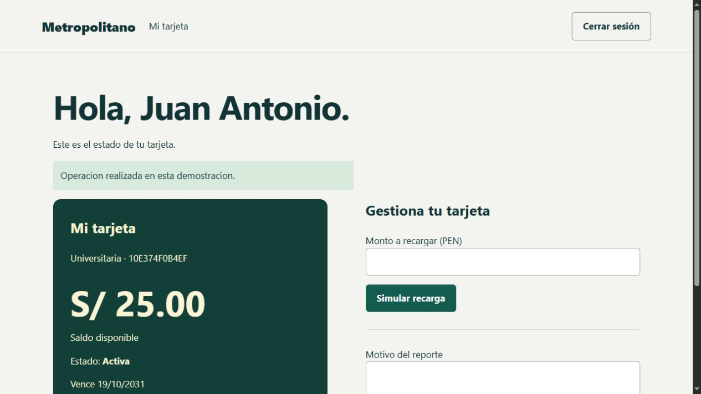

Metropolitano: mi tarjeta
Una aplicación para consultar el saldo, solicitar una tarjeta y simular recargas desde una cuenta personal.

El proyecto
- Registro, acceso y cierre de sesión.
- Solicitud de tarjeta y recarga simulada.
- Reporte de pérdida o robo y bloqueo persistente.
Aprendizaje
- Conectar formularios, modelos y vistas MVC.
- Gestionar autenticación, validación y estados persistentes.
Trabajo de recuperación
- Reconstruida la solución desde el PDF recibido.
- Persistencia JSON local, hashes de contraseña y protección antifalsificación.
Comprobación
Compilado con .NET 7. Probados registro, acceso, CSRF, saldo, recargas inválidas, bloqueo y persistencia. Interfaz comprobada en navegador.
Alcance de esta versión
Demostración local sin operador de transporte ni dinero real. El JSON sustituye el servicio Excel incompleto del informe; para un despliegue real necesita almacenamiento transaccional y un runtime soportado.
El periodo corresponde al trabajo original. La revisión y las correcciones locales se realizaron en octubre de 2026.